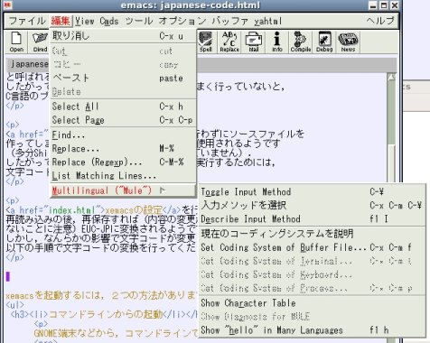
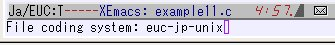

（改行やスペースなどを一度入れて，その後それらを消去すると良い）
コンピュータは01のデジタル信号で情報を表していますが， 日本語を表現するためのコード体系が複数あります． 例えば，Windows等では Shift-JISと呼ばれるコード体系が 使われています． 一方，サイバーメディアセンターのLinuxでは，EUC-JP と呼ばれる文字コードが使用されています． したがって，これらの文字コードの変換がうまく行っていないと， C言語のプログラムが動作しません．
xemacsの設定を行わずにソースファイルを 作ってしまうと，EUC-JP以外の文字コードが使用されるようです （多分Shift-JISだと思いますが，確認できていません）． したがって，一度できてしまったファイルを実行するためには， 文字コードを変換する必要があります．
xemacsの設定を行っていると， 再読み込みの後，再保存すれば（内容の変更がないかぎり保存され ないことに注意）EUC-JPに変換されるようです． しかし，なんらかの影響で文字コードが変更されない場合は， 以下の手順で文字コードの変換を行ってください．

